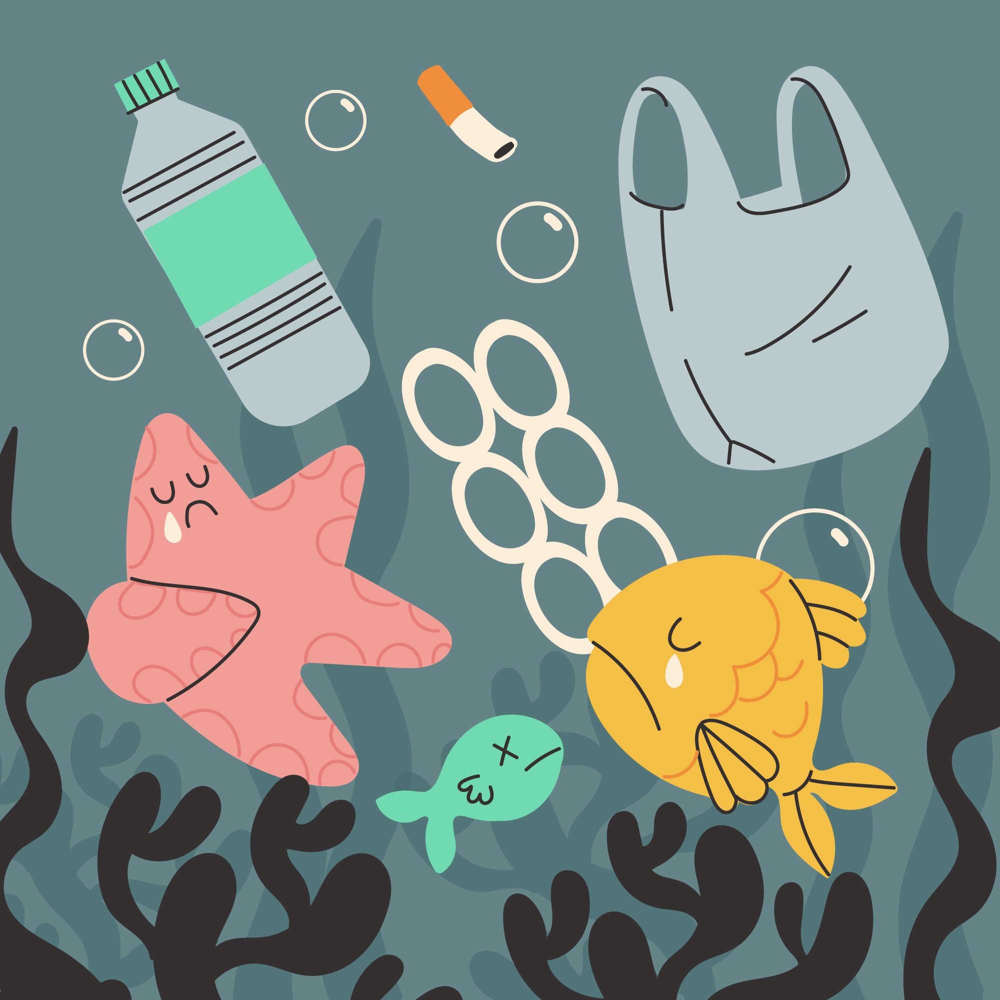

A não reciclagem emerge como um desafio urgente em face da preservação dos recursos naturais e do equilíbrio dos ecossistemas. A desconsideração deste processo crucial não apenas acelera o esgotamento de recursos vitais, como também propicia o aumento alarmante da acumulação de resíduos, culminando em sérios impactos ambientais, sendo uns dos principais ambientes, o marítimo.
